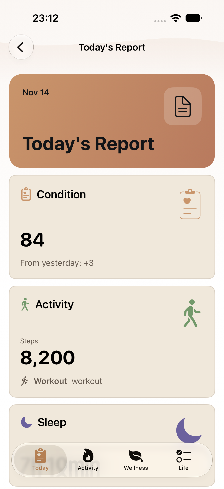
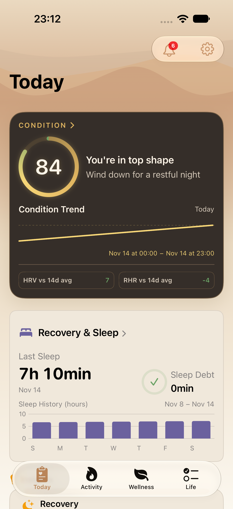
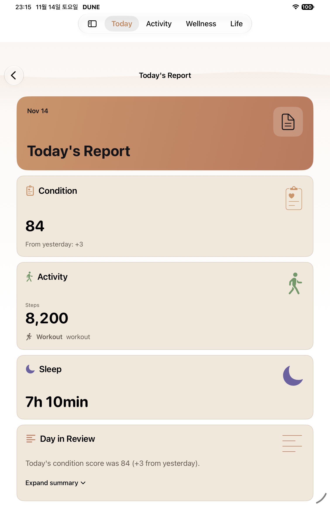
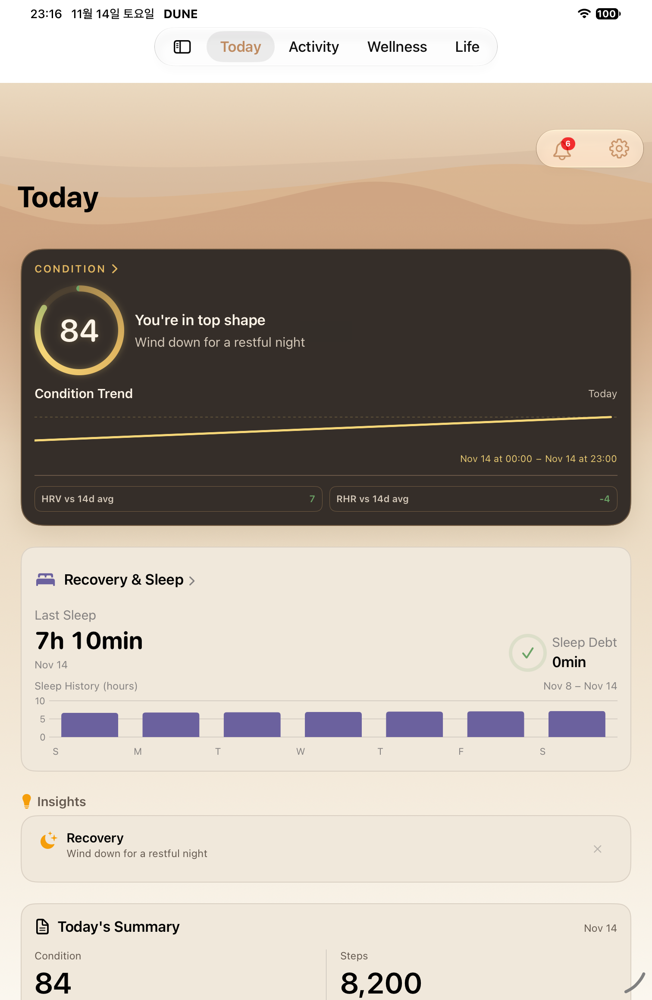

T03·T10 로딩 검증 · 2026-11-14
review-ship P2 보완 후 origin/main 기반 최종 소스의 iPhone·iPad 실제 XCTest 캡처 4장을 먼저 표시한다. 보완 전 캡처 6장은 역사 기록으로 별도 보존한다. 날씨 응답과 건강 데이터 완료 경계를 분리한 소스의 실제 XCTest 캡처다. 화면 값은 notification-routing 시드이며 실제 건강 기록이 아니다. 날씨 응답 보류는 단위 테스트에서 확인했고, 이 캡처는 정상 시드의 요약 진입·Today 복귀 완료 상태다.
실행 결과·실패 이력·검증 제한 · 원본 첨부 출처·시각·SHA-256 · 통합 실제 화면 포털
English·Light·기본 글씨·세로만 확인한다. Duo의 목표 접힘·펼침 가로 상태는 인증하지 않았다. 커스텀 dual-display runtime의 screen 0은 비활성 검은 PNG이므로 완료 증거에서 제외했다. screen 1의 실제 세로 PNG는 기기 이름만으로 일반 iPhone 또는 특정 접힘 자세로 분류하지 않고 별도 보존했다.



